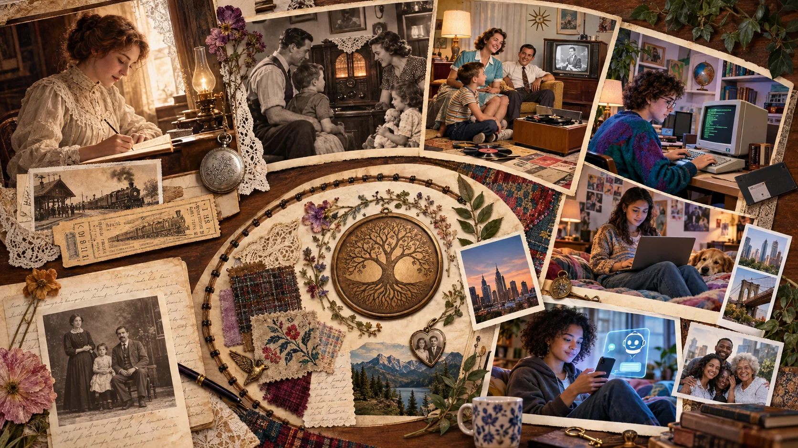
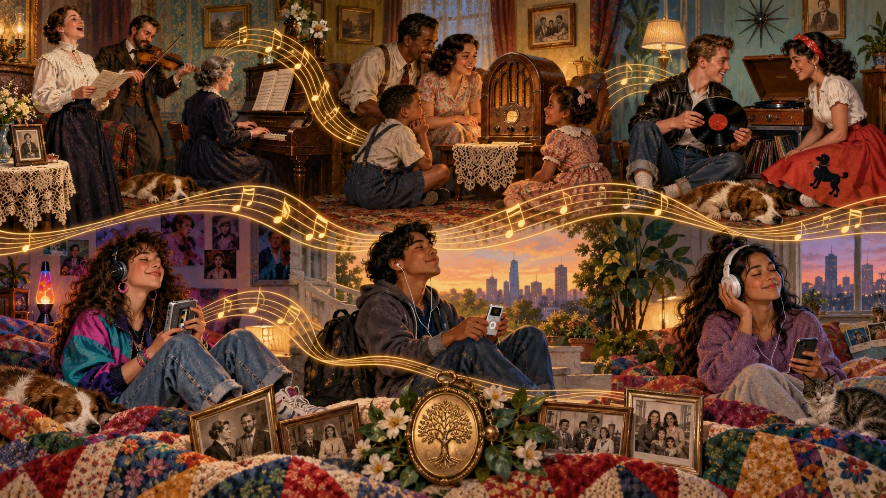

Eleanor, age 16 · Introduction
Industrialization, sociology, social construction, theory, research, and reform.
Eleanor’s diary opens a journey through generations, technologies, music, and the meanings people make together.
This is the story of Eleanor Smith Kensington. Eleanor was born in 1879 to Robert and Elaine Smith in Willow Junction, a small farming community in Ohio shaped by the railroad that carried crops, goods, workers, news, and new ideas through town. In 1900, at age twenty-one, she married Edward Kensington, an accountant and bookkeeper for many of the town’s farms, shops, and growing businesses.
This sociological journey begins with sixteen-year-old Eleanor in 1895, follows her through the transformations of the twentieth century, and then continues through her daughter Ruth, her grandchildren, and later descendants. As each generation encounters new technologies, institutions, inequalities, opportunities, and cultural expectations, the family story helps us connect private lives to public history—and ask how society shapes what people believe is possible.

In 1895, Eleanor begins writing because the world outside her window seems to be moving faster than anyone can explain. Railroads compress distance. Factory clocks organize time. New machines alter work, family routines, and ideas about progress. Eleanor loves philosophy because it asks what a good society ought to be. Sociology gives her another question: How does the society we actually built shape what people can become?
Each chapter moves forward through Eleanor’s life or the life of a later relative. Their stories are not evidence by themselves. They are a narrative doorway into concepts, historical evidence, research, and the enduring sociological task of connecting biography with history. Readers will watch technologies become smaller and more powerful while values, laws, and institutions change unevenly. That unevenness is one reason social problems can persist even when the objects of everyday life look completely new.
Industrialization, sociology, social construction, theory, research, and reform.
Culture during the Great Depression: symbols, values, norms, inequality, and cultural change.
Social structure, socialization, family guidance, development, and the life course with her children and grandchildren.
Groups, identity, deviance, social control, stigma, and counterculture across generations.
Institutions, inequality, media, computing, and expanding networks.
AI, cultural lag, social change, the Ideal Society Project, and choices about the future.
The dates identify the book’s narrative eras. Chapters may look backward or forward when a comparison makes a sociological pattern easier to see.

Music marks worship, mourning, courtship, protest, play, work, celebration, and generational identity.
Sheet music, radio, records, cassettes, streaming, and algorithms alter who can create, hear, copy, and profit from sound.
Credit, contracts, segregation, gatekeeping, and ownership influence whose artistry becomes visible and who receives the rewards.
Every section therefore pauses to hear its era sociologically. A song is never only entertainment: it can preserve collective memory, name inequality, strengthen solidarity, spread a subculture, or challenge what a society calls normal.
Begin with Eleanor’s family, a historical setting, and a change in technology or social life.
Read definitions, examples, theory, evidence, and visual comparisons. Open the interactive elements to practice.
Use music, applied activities, and career connections to transfer concepts beyond the page.
Add the chapter’s Ideal Society slide, review key concepts, and use the APA references to follow the evidence.